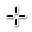

|
xtd
0.2.0
|
Loading...
Searching...
No Matches
Cursors appearances
Contains cursors appearances.
Shows xtd::forms::cursors appearance on Windows, Linux Gnome and macOS Operating Systems.
| Name | Value | Windows | macOS | Gnome |
|---|---|---|---|---|
| Application starting | xtd::forms::cursors::app_starting | |||
| Arrow | xtd::forms::cursors::arrow | |||
| Cell | xtd::forms::cursors::cell |

| ||
| Closed hand | xtd::forms::cursors::closed_hand | |||
| Contextual menu | xtd::forms::cursors::contextual_menu | 
| 
| 
|
| Cross | xtd::forms::cursors::cross | |||
| Default | xtd::forms::cursors::default_cursor | |||
| Disappearing item | xtd::forms::cursors::disappearing_item | 
| 
| |
| Drag copy | xtd::forms::cursors::drag_copy | 
| 
|
Generated on Wed Apr 5 2023 20:46:33 for xtd by Gammasoft. All rights reserved.